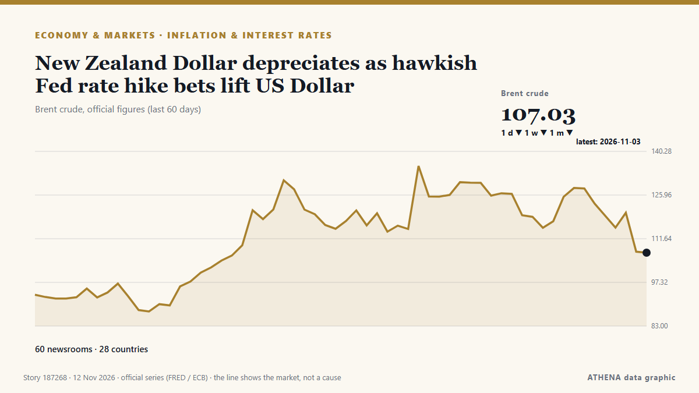

Economics, Finance & Markets
SponsoredPresented by  Cybernetics and Artificial Intelligence Lab Welcome to the Cybernetics and Artificial Intelligence Laboratory, established at the Department of Business Administration of the National and Kapodistrian University of Athens. The lab is headed by Professor Dimitrios Thomakos. The lab aims to do research that can be published in top venues. Our research uses tools and methods of Artificial Intelligence, and lies in the following areas: - Forecasting - Decision making - Cyber security - Finance We are always looking forward to collaborating with exceptional students!
Cybernetics and Artificial Intelligence Lab Welcome to the Cybernetics and Artificial Intelligence Laboratory, established at the Department of Business Administration of the National and Kapodistrian University of Athens. The lab is headed by Professor Dimitrios Thomakos. The lab aims to do research that can be published in top venues. Our research uses tools and methods of Artificial Intelligence, and lies in the following areas: - Forecasting - Decision making - Cyber security - Finance We are always looking forward to collaborating with exceptional students!
Market monitor - official figures
Which way official market measures are moving - up, down or flat - with the latest official figure and its date, and the market news ATHENA verified alongside. Official figures, not live prices.
Energy
| 1 day | 1 week | 1 month | Official figure | |
|---|---|---|---|---|
| Brent crude | ▼ | ▼ | ▼ | $107.03/bblOfficial data of 3 Nov 2026 |
| WTI crude | ▼ | ▼ | ▲ | $99.64/bblOfficial data of 3 Nov 2026 |
| US natural gas (Henry Hub) | ▲ | ▼ | ▼ | $2.63/MMBtuOfficial data of 3 Nov 2026 |
| European natural gas (1 month · 3 months · 12 months)(1M · 3M · 12M) | ▲ | ▲ | ▲ | $25.49/MMBtuOfficial data of 1 Sep 2026 |
| Coal (Australia) (1 month · 3 months · 12 months)(1M · 3M · 12M) | ▲ | ▲ | ▲ | $153.84/tOfficial data of 1 Sep 2026 |
Food
| 1 month | 3 months | 12 months | Official figure | |
|---|---|---|---|---|
| Wheat | ▲ | ▲ | ▲ | $246.85/tOfficial data of 1 Sep 2026 |
US stock markets
| 1 day | 1 week | 1 month | Official figure | |
|---|---|---|---|---|
| S&P 500 | ▲ | ▼ | ▼ | Direction only (index © Cboe)Official data of 11 Nov 2026 |
| Nasdaq Composite | ▲ | ▼ | ▼ | Direction only (index © Cboe)Official data of 11 Nov 2026 |
Rates, risk and the dollar
| 1 day | 1 week | 1 month | Official figure | |
|---|---|---|---|---|
| US 10-year Treasury yield | ▲ | ▼ | ▼ | 4.88 %Official data of 9 Nov 2026 |
| Market volatility (VIX) | ▼ | ▼ | ▲ | Direction only (index © Cboe)Official data of 10 Nov 2026 |
| US dollar, broad index | ▲ | ▲ | ▲ | 121.88Official data of 6 Nov 2026 |
The euro against other currencies
| 1 day | 1 week | 1 month | Official figure | |
|---|---|---|---|---|
| EUR/USD | ▼ | ▼ | ▼ | 1.1127 USDOfficial data of 11 Nov 2026 |
| EUR/GBP | ▬ | ▲ | ▼ | 0.8362 GBPOfficial data of 11 Nov 2026 |
| EUR/CHF | ▲ | ▲ | ▼ | 0.9234 CHFOfficial data of 11 Nov 2026 |
| EUR/JPY | ▼ | ▼ | ▲ | 177.18 JPYOfficial data of 11 Nov 2026 |
| EUR/CNY | ▼ | ▼ | ▼ | Unusual move 7.4225 CNYOfficial data of 11 Nov 2026 |
| EUR/TRY | ▼ | ▼ | ▲ | 55.890 TRYOfficial data of 11 Nov 2026 |
| EUR/NOK | ▬ | ▲ | ▼ | 10.6145 NOKOfficial data of 11 Nov 2026 |
Sources: US Energy Information Administration (oil, US gas), IMF (European gas, coal, wheat), US Treasury and Federal Reserve (10-year yield, dollar index) Cboe (VIX), S&P Dow Jones Indices (S&P 500) and Nasdaq (Nasdaq Composite), via FRED (Federal Reserve Bank of St. Louis); euro reference rates © European Central Bank. Figures are the latest official values with their date - not live prices. Directions are computed by ATHENA.
Crypto, ETFs and shares in the news
- Morning Minute: Tokenized Stock Venues Are Launching Without Big Tech’s Approval Risk 0.6 12 Nov
- Blackstone plants new flag in Dubai as Gulf wealth draws Wall Street Risk 0.0 12 Nov
- S&P 500, Nasdaq rise as CoreWeave results ease AI spending worries Risk 1.6 12 Nov
- NZ shares end flat as US inflation pushes bond yields higher – Market close Risk 0.9 12 Nov
- KOGAS Q3 net more than triples on equity gains, lower costs Risk 0.0 12 Nov
- Russian stock indices mixed as main trading session closes Risk 0.0 12 Nov
- Asian stocks fragile, Nvidia plummets as board to decide CEO's fate Risk 3.8 12 Nov
- Binance hack reveals crypto's uphill battle against hackers Risk 3.5 12 Nov
- Anthropic targets valuation of up to $1.4 trillion for blockbuster IPO Risk 1.2 12 Nov
- Anthropic opens Australian retail IPO offering as AI scrutiny intensifies Risk 1.3 12 Nov

Inflation & interest ratesNew Zealand Dollar depreciates as hawkish Fed rate hike bets lift US Dollar
Reported by 61 outlets in 27 countries since 7 Nov. First reported by Taipei Times. ATHENA rates the risk 3.4/10 (moderate), with 85% confidence.
| 30 Oct | 115 |
|---|---|
| 31 Oct | 28 |
| 1 Nov | 72 |
| 2 Nov | 135 |
| 3 Nov | 124 |
| 4 Nov | 115 |
| 5 Nov | 118 |
| 6 Nov | 95 |
| 7 Nov | 42 |
| 8 Nov | 65 |
| 9 Nov | 152 |
| 10 Nov | 128 |
| 11 Nov | 109 |
| 12 Nov | 26 |
S&P 500, Nasdaq rise as CoreWeave results ease AI spending worries
The CBOE Volatility Index, Wall Street's fear gauge, fell for the fourth straight session after CoreWeave said it would become profitable in the first half of 2028. from Free Malaysia Today
More Australians failing to make mortgage payments as interest rate rises bite
Data from the Commonwealth Bank of Australia attributed the small increase in the number of people struggling to inflation and rising interest rates. from Sydney Morning Herald
Tuchel committed to England until Euro 2028
Thomas Tuchel said his contract had no release clause and he intends to stay until the 2028 European Championship. from Free Malaysia Today
UK economic growth expected to have picked up amid AI and defence drive
The Office for National Statistics was publishing the latest gross domestic product figures on Thursday. from The Irish News (Belfast)
Binance hack reveals crypto's uphill battle against hackers
An on-chain tally puts the suspected Binance drain at $5.57 billion across three blockchains, as Tether and Circle froze $1.8 billion. from Decrypt
Anthropic targets valuation of up to $1.4 trillion for blockbuster IPO
A visitor at Anthropic’s Code W/ Claude event in San Francisco, May 7, 2026. from The San Juan Daily Star
Israeli army, illegal settlers carry out over 1,180 arson attacks in occupied West Bank
Israeli settlers set fire to a scrapyard in the West Bank village of al-Lubban ash-Sharqiya, destroying over 100 vehicles and causing damages exceeding one million shekels. from Arab News
Rebounding AI stocks lift Wall Street
Wall Street is ticking higher Tuesday as stocks in the artificial-intelligence industry support the market, at least for now. from The Korea Times
Qantas to outsource 850 local jobs with most roles moving to India
The Australian airline said the move was aimed at modernising its IT systems and noted the impact of AI. from BBC Business
Maserati to build branded residential island in Dubai’s World Islands with 840 homes
The Italian carmaker has partnered with the newly launched ultra-premium real estate brand of SAMANA Developers, to unveil Maserati Island. from Arabian Business
Japan services activity expands for fifth month: PMI
New orders increased for a 28th straight month. from The Business Times
Millions of workers strike across Spain as citizens protest soaring housing costs
Millions of Spanish workers shut down businesses and public transportation across the eurozone's fourth largest economy on Wednesday before thousands took to the streets of major cities in a… from CBC News (alternative feed)
UK rates might need to fall far and fast in the future
Two tectonic shifts in the mortgage market are changing the way monetary policy works. from Financial Times - Global economy
Anthropic set for £970bn valuation in mega IPO
The Claude maker’s potential stock market listing is set to see it join the ranks of the world’s biggest IPOs. from Evening Standard (London)
Israel kills 14-year-old Palestinian boy in West Bank, wounds two others in Gaza
Red Crescent says troops blocked ambulance crews from reaching wounded person and detained 3 volunteer medics in Burqa. from Anadolu Agency (English)
James Bond Shocker: Robert Pattinson and Nicholas Hoult Late Contenders for 007 After Auditioning for Denis Villeneuve
As James Bond casting rumors heat up, a couple more A-list actors have entered the mix: Robert Pattinson and Nicholas Hoult were among the stars who screen-tested to play the new 007. from Variety
FTC to fine 15 firms 1.62tr won for rigging govt. bond bids
South Korea's fair trade watchdog said Wednesday it has decided to impose 1.62 trillion won ($1.2 billion) in fines on 15 financial companies for colluding in government bond auctions for more than… from Korea Herald
S. Korea pledges $20 mil. to ADB fund for AI projects
South Korea has pledged to contribute $20 million to an Asian Development Bank (ADB) trust fund aimed at supporting artificial intelligence (AI) development projects, the finance ministry said… from The Korea Times
Dangote Cement shelves London listing, blames market conditions in blow to LSE
Dangote Cement may revisit London listing when market stability improves, person familiar with the matter says Shares remain listed on Nigerian exchange, with no disruption to business plans… from Club of Mozambique
Gold and silver prices rise on commodity markets
Gold and silver prices have risen on the COMEX commodity exchange in New York. from AzerNews
Singapore to launch gold vault service for foreign central banks
The Monetary Authority of Singapore said on Tuesday it would launch a vaulting service to hold bullion for foreign central banks and lower taxes on some gold-market companies as it competes for a… from MyJoyOnline
China's giant pandas make public debut at US zoo
The pair are to be hosted in the southern US facility for the next 10 years. from The Straits Times
US evacuates 13 military aircraft from second UK base as new Iran threat raises alarm
The US military evacuated aircraft from a second airbase in Britain on Monday after a threat from Iran, the Wall Street Journal reported, citing people familiar with the matter,... from Oman Observer
Interest Rate Hike Odds Rise—After October Inflation Exceeded Economists’ Expectations
With another month of higher numbers for consumer prices, it seems likely the Federal Reserve will raise interest rates in December. from Forbes Business
Claude chatbot maker set for $1.3tn stock market debut despite ‘catastrophic’ AI warning
The AI company behind the Claude chatbot will offer its shares at between $70 and $78, which is lower than what was expected. from BBC News
Slovak PM criticises Germany's Merz over threat to block EU budget without funding for Ukraine – Reuters
Slovak Prime Minister Robert Fico accuses German Chancellor Friedrich Merz of blackmail after Germany linked its support for the 2028-2034 EU budget to a commitment by all member states to fund… from Ukrainska Pravda (English)
Pope Leo XIV draws huge crowds in Córdoba after record Buenos Aires mass
Faithful from all over Argentina, from the farthest north of the country to Patagonia in the south and points in between, drove hours to be on hand for the service led by the Pope. from Euronews English
What Hong Kong’s exchange means for the price of Gold [Video]
In this week’s Live from the Vault, Andrew Maguire is joined by Ivan Bayoukhi of Wall Street Bullion to examine the US midterm results, the recent selloff in Gold and Silver, and the implications of… from FXStreet
Romanian Gets Conditional Sentence for Transporting Illegal Cigarettes from Greece to Bulgaria
Eurogroup and Ecofin meetings in Brussels – Greece seeks a longer adjustment period, warning of a surge in cigarette smuggling – Agreement among the 27 member states proves difficult, with a… from ProtoThema English
Microsoft tops Nvidia's market cap for first time since June 2025
Nvidia shares fell by more than 6% during regular trading on the Nasdaq on November 10. from TASS (English)
Occidental Profit Tops Estimates as Debt Slashed
'We reached an important milestone in the third quarter, reducing principal debt to $10 billion after retiring $10.4 billion of debt since the beginning of this year'. from Rigzone
California voters reject billionaire tax
The proposed measure would have imposed a one-time 5 percent tax on Californian billionaires to fund healthcare. from Al Jazeera English
Australia axe Labuschagne for New Zealand test series
MELBOURNE: Australia have dropped Marnus Labuschagne for next month’s four-test home series against New Zealand after a prolonged slump in form, selector George Bailey confirmed on Monday. from Business Recorder